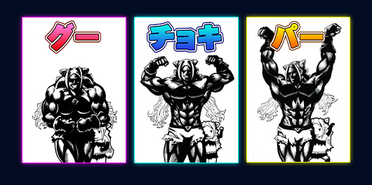

ルール説明
筋肉じゃんけん
筋肉じゃんけんとは：「筋肉じゃんけん」とは、じゃんけんのルールに基づいて、相手との勝負に勝つために、自分の腕や体の筋肉を使って表現する、ある種の身体表現競技です。(Chat-GPTより)

グー：モストマスキュラー
「最も発達した筋肉」という意味の「モストマスキュラー」ポーズは、ボディビル競技において上半身の筋肉を強調する代表的なポーズです。
主にフリーポーズ（決勝審査）やポーズダウン（表彰式）で行われています。
チョキ：ダブルバイセップス
バイセップスは上腕二頭筋のことを示しており、二つの上腕二頭筋を美しく見せるポージングでもあります。
力コブを作るようなポージングでもあり、知らない間にダブルバイセップスに近いポーズをしたことがある人も多いのではないでしょうか。
パー：オリバーポーズ
両手を高々と挙げて、腕の太さや逆三角形の体型を強調する独特のポーズは「オリバーポーズ」と呼ばれ、かつてボディビル大会の最高峰であるミスターオリンピアで活躍した故セルジオ・オリバーが得意としたポーズです。
両手を挙げて手首を内側にひねり、手の平を外側に向けるのが特徴です。